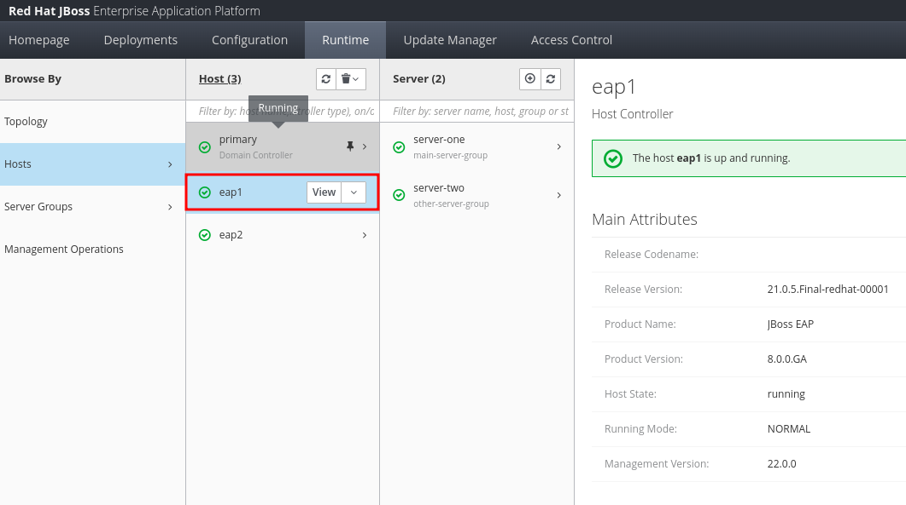

JVM Configuration for JBoss EAP
JBoss EAP is written in Java, and runs on the Java Virtual Machine (JVM). An EAP administrator should be able to configure the settings of the underlying JVM to ensure optimal performance of applications deployed on JBoss EAP instances.
You can pass arguments to the java program to configure the JVM. There are hundreds of JVM options available to tune the behaviour of the JVM. The following list is a small subset of commonly tuned parameters for mostly backend services like application servers:
-
-Xms is used to denote the minimum heap size. It must be less than or equal to the maximum heap size.
-
-Xmx defines the maximum heap size. If the application allocates memory greater than the maximum heap size, then the JVM process triggers an out-of-memory (OOM) error.
-
-XX:MaxMetaspaceSize defines the maximum size of the metaspace region.
-
-XX:NewSize defines the size of the eden generation.
-
-Xss or -XX:ThreadStackSize defines the size of each Java thread stack.
Consult the references section for more information on the JVM parameters and other aspects of JVM Tuning.
JVM configuration is different for JBoss EAP standalone mode and managed domains.
JVM Configuration in Standalone Mode
The JVM memory settings for a standalone server are defined in the EAP_HOME/bin/standalone.conf file. The JVM settings defined in the JAVA_OPTS variable are passed to the JVM process that is running the standalone server.
if [ "x$JAVA_OPTS" = "x" ]; then
JAVA_OPTS="$JBOSS_JAVA_SIZING -Djava.net.preferIPv4Stack=true"
JAVA_OPTS="$JAVA_OPTS -Djboss.modules.system.pkgs=$JBOSS_MODULES_SYSTEM_PKGS -Djava.awt.headless=true"
else
...
fiWithin the double quotes of the JAVA_OPTS variable, you can edit, add, or delete any of the
settings regarding the JVM memory and garbage collection options for your standalone server.
Changes to the JVM settings in standalone.conf require a server restart.
JVM Configuration in a Managed Domain
In the case of a managed domain, the host controller process starts EAP server instances as per the domain controller configuration policies. The JVM options for each individual server can be configured at three different levels:
- Host Controller Level
-
The <jvm> section within
host.xml - Server Group Level
-
The <server-group> section in
domain.xml - Server level
-
The <server> section within
host.xml
| Settings at the lower levels of the hierarchy override the settings at higher levels. For example, setting JVM parameters at the individual server level will override any settings at the server group, or the host controller level. |
There is a EAP_HOME/bin/domain.conf file in the same location as the standalone.conf file. The JVM memory options in domain.conf refer to the JVM settings for the Java process that is running the host controller, NOT the individual JBoss EAP servers within that host!
|
You can configure the JVM settings for servers in a managed domain from the EAP web console at Runtime > Hosts or at Runtime > Server Groups sections.
You can also use the EAP CLI to configure the JVM settings. Consult the product documentation for the exact CLI commands.
Exercise: JVM Configuration in a Managed Domain
Pre-requisites
-
You must have set up a managed domain of JBoss EAP servers and should have created a management user that can log in to the EAP web console or the EAP CLI.
Steps
-
Log in to the EAP web console as a domain administrator user (If you completed the previous sections, then you should log in as the
eap-domain-adminuser). -
Click
Runtime > Hosts > eap1. Click theViewbutton next toeap1to view the settings for the host.Figure 3. Configure Host Level Settings -
In the
eap1Host Controller page, clickJVMsin the left sidebar. -
There should a single
defaultentry in the JVM list page. Click ondefaultto view the settings. It has a default heap size of64m, maximum heap size of256m, and JVM option-server, -XX:MetaspaceSize=96m, -XX:MaxMetaspaceSize=256m -
Click
Addto add a new JVM configuration. In theAdd JVMdialog that pops up, entermyeap1jvmas the name and clickAdd. -
Select the
myeap1jvmand then clickEdit. Enter512min theMax Heap Sizefield and clickSave. -
Click the
Backlink to go back to theRuntimeview. You need to restart the server instances running on the hosteap1for your JVM changes to take effect. ClickRuntime > Hosts> eap1 > server-one. Click theViewbutton next toserver-oneand then clickRestartto restart the JVM process forserver-one. -
Wait for a few minutes while
server-oneis restarted. After the server is started (indicated by a green tick mark in the web console), log in to theeap1VM using SSH. Run the following command to check the startup parameters forserver-one[jboss@eap1 ~]$ ps ax | grep server-one /usr/lib/jvm/java-17-openjdk-17.0.6.0.10-3.el9.x86_64/bin/java -D[Server:server-one] -D[pcid:175070110] -Xms1000m -Xmx1000m -
Some settings are inherited from the host level settings, but the -Xmx argument is 1000m instead of the 512m you configured at the host level. Can you guess why? [Hint: JVM settings at lower levels of the hierarchy override values set at higher levels].
-
Click
Runtime > Server Groups > main-server-group. Click theViewbutton next tomain-server-groupto open the Server Groups configuration page. ClickJVMsin the left sidebar to view the JVM configuration for the server group. Click ondefaultto view the default settings. -
Observe that minimum and maximum heap size is set to 1000m. These values override any settings at the host level.
Optional Challenge Exercise
-
Edit the heap settings at the server group level. Restart the server instances and observe by running the
ps axcommand if your new settings are applied -
Edit the JVM server configuration for one of the servers (server-one, server-two etc) and verify that values set at the individual server level override values from both the host and the server group level.
-
Try connecting to the domain controller using the EAP CLI and configure JVM settings using EAP CLI commands. Consult the product docs at https://access.redhat.com/documentation/en-us/red_hat_jboss_enterprise_application_platform/7.4/html/configuration_guide/configuring_jvm_settings#jvm_host_controller for examples. [Hint: Use tab-completion in the EAP CLI to explore the commands and operations available in a managed domain.]